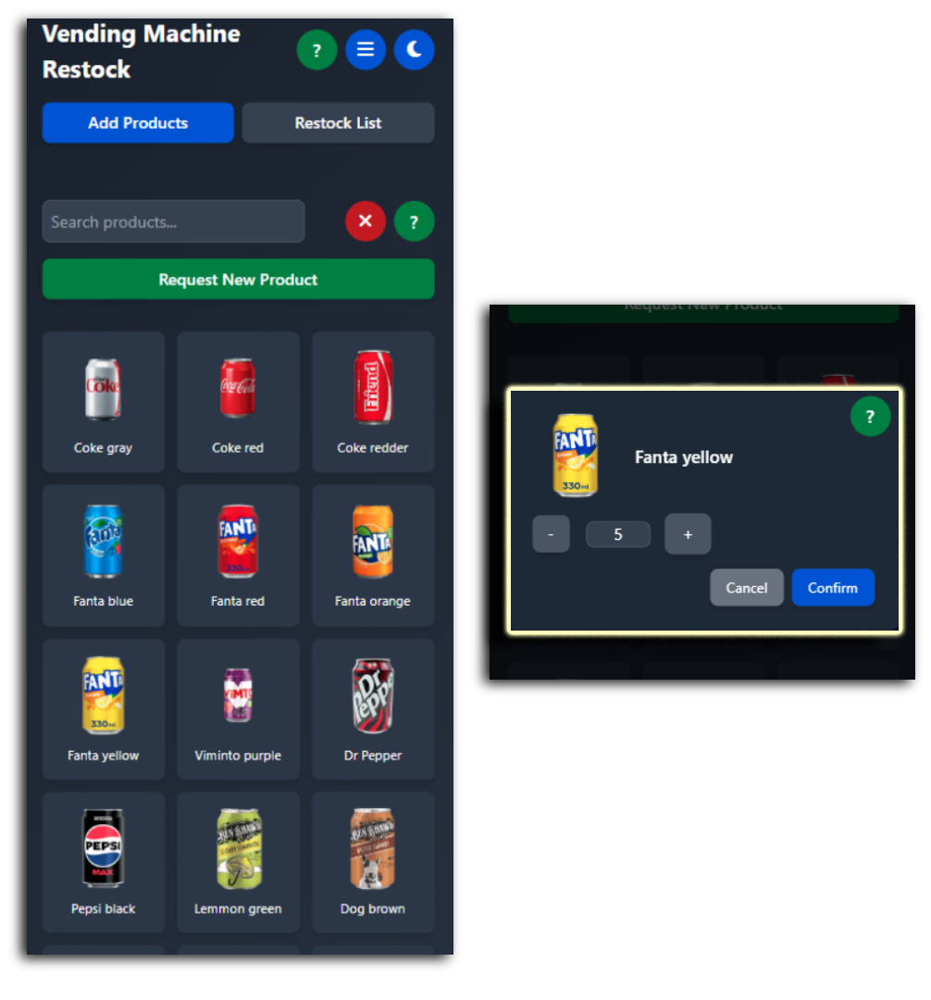
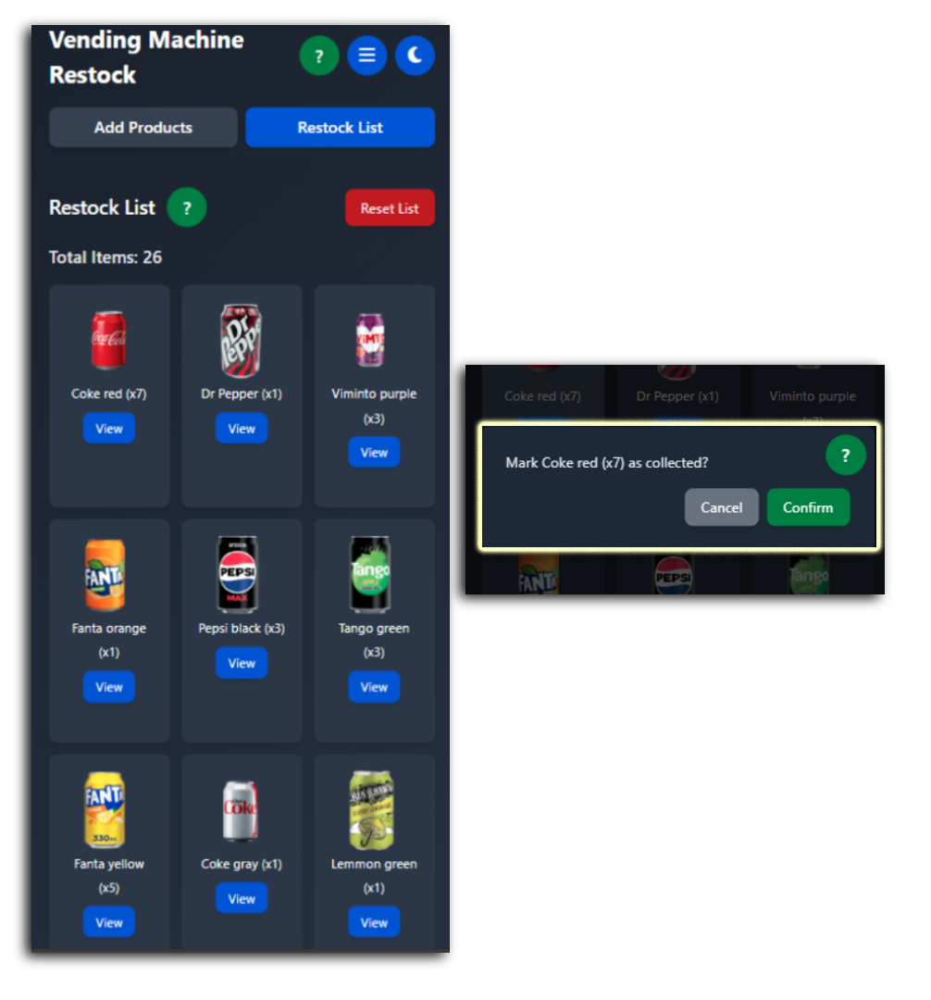

PROJECT DETAILS
VENDING MACHINE RESTOCK (RESTOCKER)
Overview
Restocker is a simple web app designed to help plan and track vending machine restocks. The goal is to keep restocking organised, reduce missed items, and make the process quicker and more consistent.
Problem
- Restocks can become messy without a clear checklist or structured process.
- It’s easy to forget items, overstock, or waste time double-checking.
- A simple digital tool can make restocking more consistent and efficient.
Solution
- A clean interface to support a clear restocking workflow.
- Focus on readability and quick interaction (built for real use, not just appearance).
- Designed to be easy to expand later (more machines, more items, better reporting).
What I built
- A front-end web app using HTML, CSS, and JavaScript.
- A structured layout with clear hierarchy (titles, actions, sections).
- A simple approach that keeps the site lightweight and easy to maintain.
Skills demonstrated
- UI structure and spacing for readability (clean layout and consistent styling).
- Problem-solving: turning a real process into a usable tool.
- Attention to detail: keeping the interface clear and easy to understand.
Screenshots
A quick look at the main workflow — selecting products and building a restock list.

Add Products
Browse or search products and open an item to set the quantity needed. This keeps selection quick and reduces mistakes when preparing a restock.

Restock List
View what’s needed with totals and mark items as collected. The confirmation step helps prevent accidental changes while restocking.
How it can be adapted for a business
- Can be adapted for stock checking in retail, warehouses, or vehicle inventory.
- Can be extended to support multiple locations, users, and item categories.
- Could connect to a database for tracking restock history and reporting.
- Branding (colours, typography, layout) can be adjusted for any company.